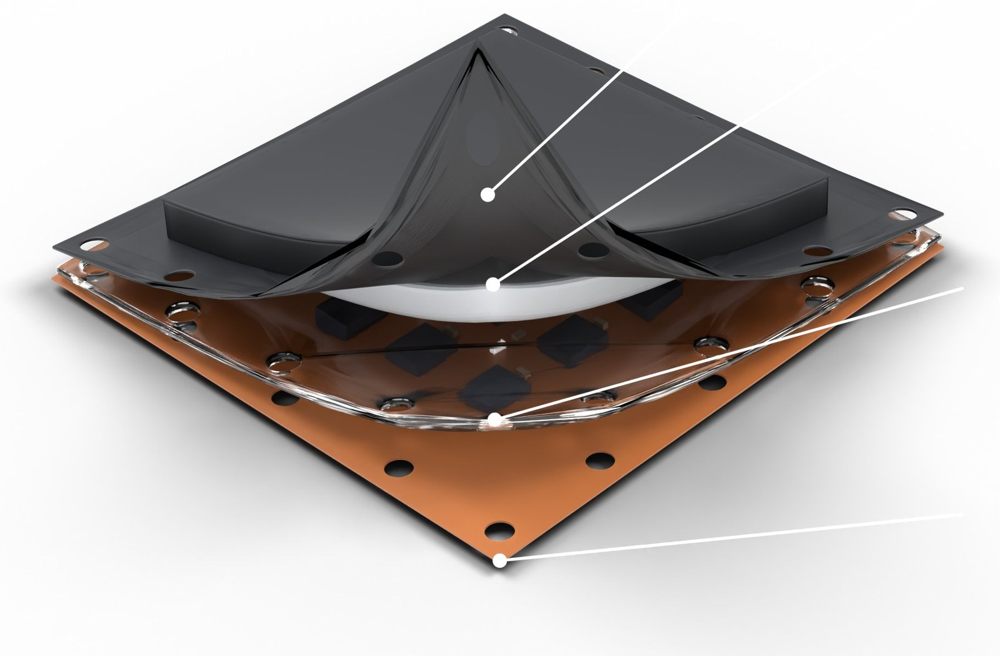
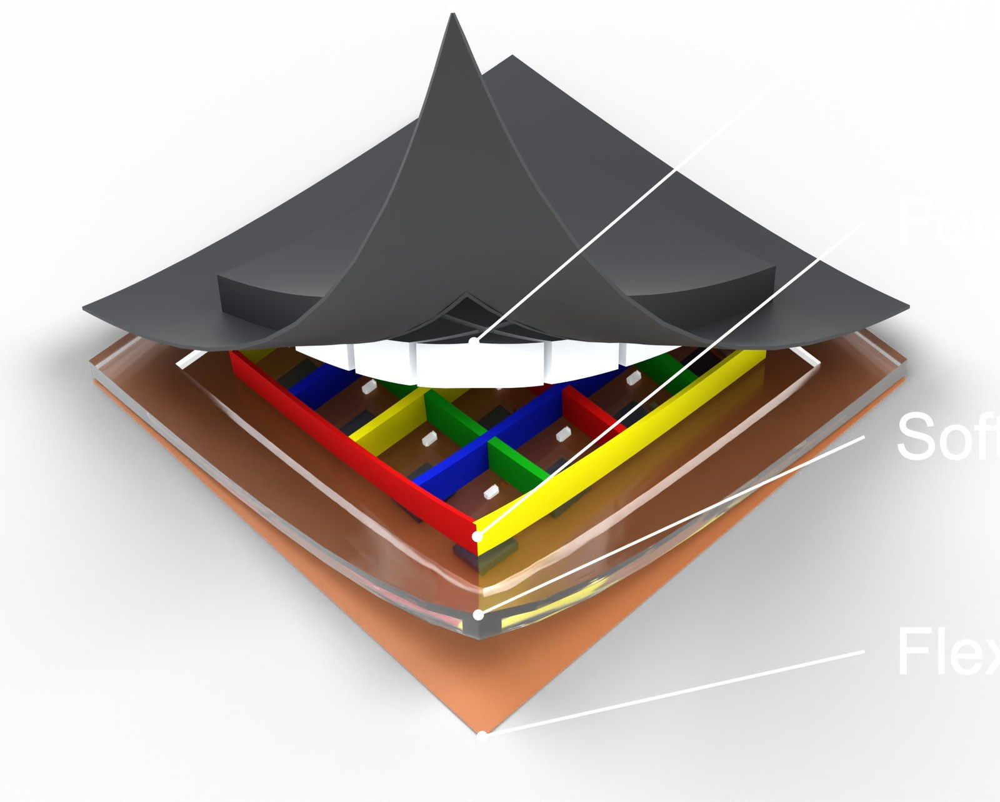
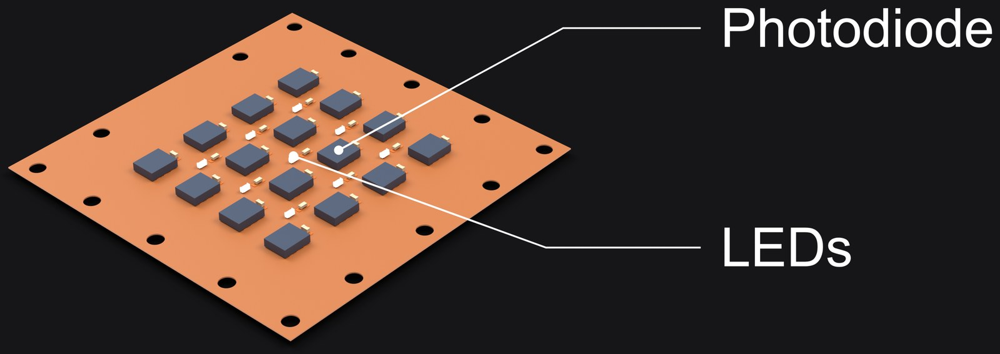
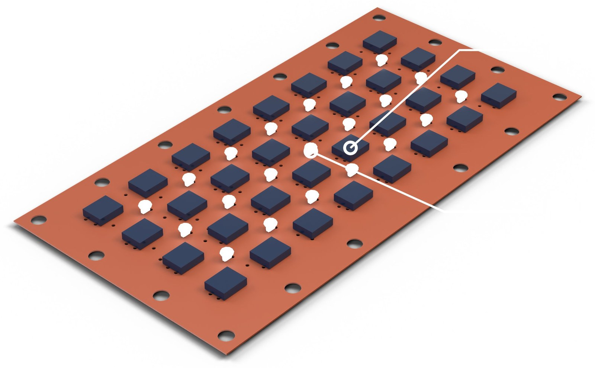
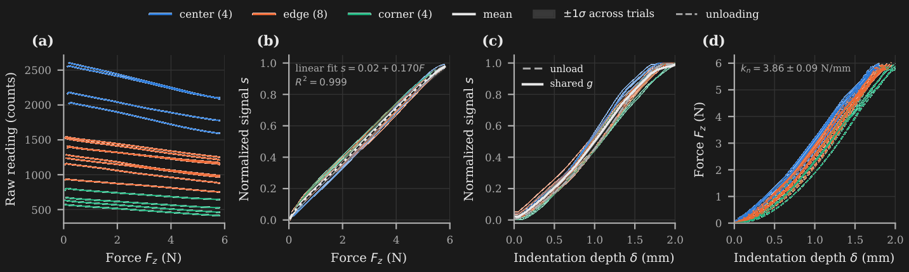
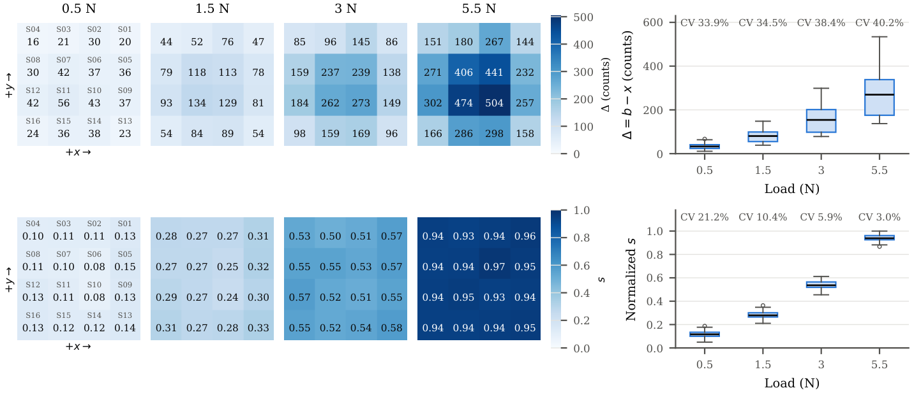
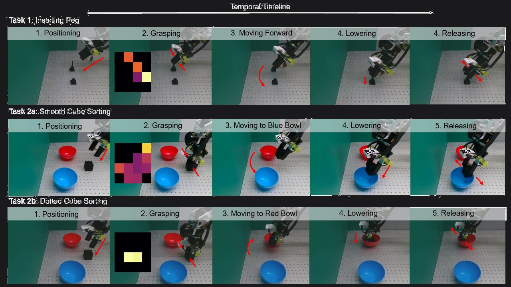

Very first tactile array with per taxel shear sensing
A 4×4 optical taxel array. Each taxel is a light-to-digital converter that observes LED light back-scattered from a translucent white silicone layer capped by an opaque black film. Pressing thins the layer, so the reading falls with local indentation depth.

Render of the LuxTac sensing head. The stack, peeled apart: black opaque film, colored taxel grid, clear soft acrylic layer, flexible PCB.

Dense, low-cost tactile arrays have made touch a practical input for robot learning, but the dominant piezoresistive designs report an electrical quantity that is only loosely tied to the physics of contact, which makes them hard to characterize, compare across units, or reproduce in simulation. We present LuxTac, a 4×4 optical taxel array in which each taxel is a light-to-digital converter that observes LED light back-scattered from a translucent white silicone layer capped by an opaque, light-absorbing black film. Pressing the surface thins the scattering layer, so the reading falls monotonically with local indentation depth rather than with force directly.
We exploit this to split calibration into two independent maps: an optical transfer function from depth to signal, and a mechanical stiffness from force to depth, which is exactly the quantity a penalty-based tactile simulator needs. Over 240 presses, LuxTac responds linearly to force (R² = 0.999) from a 104 mN detection threshold to at least 5.8 N, with 2.0% repeatability, 5.9% hysteresis, and a taxel-to-taxel coefficient of variation that drops from 38% to 6% after normalization. Adding LuxTac to a visuomotor policy raises success on peg-in-hole and cube sorting from 44% and 33% to 87% and 40%. Design files and code will be released.
Each taxel consists of a photodetector and nearby LEDs under a layer of translucent white silicone, capped by an opaque black film. LED light entering the silicone is scattered by the white pigment; part of it returns to the detector, and part reaches the black film and is absorbed. The black film also shields the detector from ambient light.
Indenting the surface reduces the local thickness and therefore reduces the returned light. A key consequence is that the raw reading decreases with load and depends on the deformation of the elastomer, not on force directly. Force enters only through the mechanics of the silicone, which we treat as a separate map.

Each converter integrates an IR-blocking filter, a photodiode array, and a 16-bit integrating ADC per channel, so the analog signal never leaves the package. All 16 converters share one fixed I²C address, so two TCA9548A switches give each sensor its own bus segment. A Teensy 4.1 polls the 16 sensors and streams a frame over USB serial at a nominal 100 Hz.
LuxTac scales without changing the readout. The same stack and the same Teensy readout run every size below.

A thin light blue soft acrylic layer is the base the rest are molded on, before the white silicone goes on.
XP-565 at a 15:1 ratio by weight, pigmented with 0.04% white Silk Pig. Cast into laser-cut acrylic molds, 2 mm and 0.5 mm thick, secured with M2 screws. Degassed, poured slowly to minimize air entrapment, then oven-cured about 20 minutes.
Colored rows and columns between the channels, the vibrant grid under the film.
Opaque top layer: Smooth-On Psycho Paint Part A, Part B, black Silk Pig, and NOVOCS silicone solvent in a 1:1:0.5:1 ratio by weight, 0.1 mm.
Raw readings differ strongly across the array: center taxels have baselines of 2364 ± 284 counts, edge taxels 1322 ± 203, and corner taxels 673 ± 100, consistent with edge and corner detectors collecting scattered light from fewer LEDs. After normalization the response is linear in force. The mean over taxels follows s = 0.02 + 0.170F with R² = 0.999 from 0.1 N to the 5.8 N limit of the test, and neither a dead zone nor saturation is reached.


| Metric | Value |
|---|---|
| Noise σ | 1.06 ± 0.44 counts |
| Detection threshold | 104 ± 49 mN |
| Working range | 0.10 to 5.8 N |
| Sensitivity | 0.170 FS/N |
| Linearity | R² = 0.999 |
| Hysteresis | 5.9 ± 1.1 %FS |
| Repeatability | 2.0 ± 0.3 %FS |
| Crosstalk (x / y / diagonal) | 0.7 / 5.2 / 0.8 % |
The trained policies were evaluated on two real-world manipulation tasks: peg-in-hole insertion and cube sorting. For cube sorting, the vision-only policy successfully completed 5 out of 15 trials (33.3%), while the visuotactile policy achieved 6 out of 15 successful trials (40.0%). For peg-in-hole insertion, the vision-only policy successfully completed 7 out of 16 trials (43.8%), while the LuxTac-based policy achieved 13 out of 15 successful trials (86.7%).

| Task | Vision only | Vision + LuxTac |
|---|---|---|
| Peg-in-hole | 7/16 (43.8%) | 13/15 (87%) |
| Cube sorting | 5/15 (33.3%) | 6/15 (40%) |
| Average | 39% | 63% |
@misc{prince2026luxtac,
title={LuxTac: An Optical Taxel Array with Separable
Optical-Mechanical Calibration for Tactile Robot Learning},
author={Prince, Md Rakibul Islam and Pelan, John and
Khera, Adyaa and Pesetski, Katherine and She, Yu},
year={2026}
}